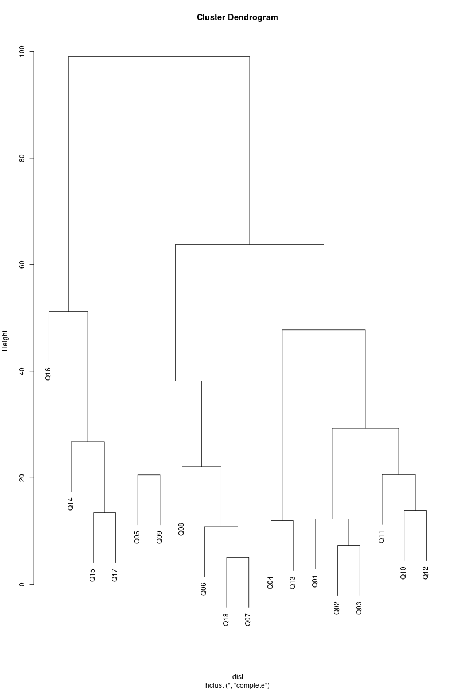

alpha <- df_all %>%
pivot_wider(
names_from = Question,
values_from = Response_v,
id_cols = c(Treat, Subject)
) %>%
dplyr::select(-c(Treat, Subject)) %>%
psych::alpha()7 Análisis estadístico.
7.1 Agrupamientos de preguntas.
7.1.1 Correlación entre preguntas con el alfa de Cronbach.
Normalmente las preguntas de un cuestionario pretenden medir una variable que está oculta o latente. En nuestro caso es la calidad del subtitulado. Las respuestas a estas preguntas relacionadas deben ser consistentes internamente, es decir, las respuestas deben correlacionarse fuerte y positivamente.
Un índice que se utiliza habitualmente para medir la consistencia interna de un cuestionario es el coeficiente alfa de Cronbach (ver Schweinberger 2020). Se define de esta forma:
\[\begin{equation} \alpha = \frac{N}{N-1} \left(1 - \frac{\sum_{i=1}^{N} s_{i}^{2}}{s^{2}} \right) \end{equation}\]
Donde:
- \(\alpha\) es el coeficiente
alfa de Cronbach. - \(N\) es el número de items de la escala de Likert.
- \(s_{i}^{2}\) es la varianza de la puntuación del item \(i\).
- \(s^{2}\) es la varianza total de las puntuaciones de todos los items.
Valores cercanos 1 indican una fuerte correlación en las respuestas y se admite que las preguntas del cuestionario están midiendo la misma variable latente.
Para calcular en R este coeficiente podemos usar la función alpha del paquete psych:
Se obtiene un coeficiente alfa de alfa de Cronbach de 0.92 que indica una muy buena correlación entre las respuestas a todas las preguntas. Este valor apenas se ve alterado si se elimina una de las preguntas (ver ?tbl-drop-alpha).
Valor del coeficiente alpha de Cronbach si se elimina una pregunta.
| Q18 | Q01 | Q02 | Q03 | Q04 | Q05 | Q06 | Q07 | Q08 |
|---|---|---|---|---|---|---|---|---|
| 0.91 | 0.92 | 0.92 | 0.92 | 0.92 | 0.91 | 0.91 | 0.91 | 0.91 |
| Q09 | Q10 | Q11 | Q12 | Q13 | Q14 | Q15 | Q16 | Q17 |
|---|---|---|---|---|---|---|---|---|
| 0.91 | 0.91 | 0.92 | 0.91 | 0.92 | 0.92 | 0.92 | 0.93 | 0.92 |
En la ?tbl-item-alpha mostramos las preguntas que más contribuyen al índice alpha de Cronbach. Es interesante que la pregunta \(Q18\), que es la valoración general del cuestionario, sea la que mejor contribución tiene al índice.
Relación de cada pregunta con el índice alpha de Cronbach.
| Q18 | Q05 | Q06 | Q09 | Q08 | Q07 | Q10 | Q12 | Q02 |
|---|---|---|---|---|---|---|---|---|
| 0.86 | 0.81 | 0.79 | 0.79 | 0.77 | 0.75 | 0.73 | 0.72 | 0.71 |
| Q03 | Q14 | Q01 | Q11 | Q15 | Q13 | Q04 | Q16 | Q17 |
|---|---|---|---|---|---|---|---|---|
| 0.68 | 0.66 | 0.65 | 0.64 | 0.56 | 0.51 | 0.46 | 0.44 | 0.42 |
7.1.2 Agrupamiento jerárquico aglomerativo.
En en la Sección 7.1.1 y en la Sección 6.2 hemos visto que algunas de las preguntas tienen respuestas similares a otras pero diferentes del resto. Puede ser interesante aplicar una técnica de agrupamiento que nos permita crear grupos de preguntas que podremos analizar por separado.
Vamos a realizar una agrupación jerárquica aglomerativa de las preguntas en función de la tabla de contingencia de las respuestas utilizando la distancia euclidea como medida de distancia y el método de aglomeración de enlace completo para unir conglomerados 1. Para ello primero calculamos la tabla de contingencia (ver Tabla 7.1) de preguntas y respuestas.
table <- df_all %>%
xtabs(~ Question + Response, data = .)| Question | Response_0 | Response_1 | Response_2 | Response_3 | Response_4 | Response_5 |
|---|---|---|---|---|---|---|
| Q18 | 0 | 11 | 33 | 18 | 52 | 60 |
| Q01 | 0 | 10 | 20 | 10 | 59 | 75 |
| Q02 | 0 | 5 | 26 | 14 | 58 | 71 |
| Q03 | 5 | 5 | 26 | 11 | 60 | 67 |
| Q04 | 0 | 2 | 7 | 10 | 61 | 94 |
| Q05 | 1 | 29 | 31 | 12 | 34 | 67 |
| Q06 | 1 | 6 | 29 | 21 | 53 | 64 |
| Q07 | 0 | 13 | 32 | 14 | 54 | 61 |
| Q08 | 4 | 15 | 41 | 19 | 40 | 55 |
| Q09 | 1 | 39 | 29 | 12 | 42 | 51 |
| Q10 | 8 | 4 | 24 | 18 | 59 | 61 |
| Q11 | 3 | 2 | 14 | 23 | 75 | 57 |
| Q12 | 5 | 4 | 26 | 18 | 69 | 52 |
| Q13 | 1 | 2 | 2 | 19 | 62 | 88 |
| Q14 | 21 | 9 | 29 | 27 | 44 | 44 |
| Q15 | 26 | 5 | 25 | 36 | 47 | 35 |
| Q16 | 47 | 2 | 5 | 57 | 39 | 24 |
| Q17 | 29 | 4 | 15 | 44 | 49 | 33 |
Con la tabla de contingencia calculamos las distancias entre preguntas y realizamos el agrupamiento. En el dendograma (ver Figura 7.1) se aprecian claramente tres conglomerados. Es muy interesante constatar que los tres grupos están formados por preguntas que en su mayor parte son correlativas. Esto es consistente con que al elaborar un test normalmente se colocan las preguntas por unidades temáticas y con que el encuestado tiende a responder de forma similar a preguntas correlativas.
dist <- dist(table, method = "euclidean")
cluster <- hclust(dist, method = "complete")
plot(cluster)
Podemos distinguir los siguientes grupos y subgrupos:
- Grupo 1: Trata sobre la corrección del subtítulo.
- Subgrupo 05, 06, 07, 08, 09: preguntas sobre si la información que presenta el subtítulo es correcta y está bien escrita.
- Pregunta 18: valoración general del subtitulado. El que esta pregunta esté incluida en este grupo estaría indicando que este es el apartado al que más importancia dan los estudiantes a la hora de valorar la calidad del subtitulado.
- Grupo 2: Es el más numeroso. En general está formado por preguntas sobre el grado de dificultad que presenta la lectura del subtítulo.
- Subgrupo preguntas Q01, Q02, Q03: colocación de los subtítulos.
- Subgrupo preguntas Q10, Q11, Q12: sincronización, velocidad y número de líneas.
- Subgrupo preguntas Q04, Q13: contraste y legibilidad.
- Grupo 3: son preguntas que tratan también sobre la corrección del subtítulo pero se diferencia del grupo uno ya que ahora se trata de cuestiones más sutiles y presumiblemente más difíciles de valorar para un novato. Está formado por las preguntas Q14, Q15, Q16 y Q17.
7.2 Análisis de tablas de contingencia.
En esta sección se aplicarán técnicas estadísticas que se basan en tablas de contingencia. Una descripción teórica de este tipo de técnicas se pueden encontrar en Agresti (2018). Un tratamiento aplicado y basado en gráficos, que será el enfoque que seguiremos en este trabajo, es realizado en Friendly, Meyer, y Zeileis (2015).
7.2.1 Asociación de variables con la prueba de homogeneidad \(\chi^2\).
Podemos usar la prueba de homogeneidad \(\chi^2\) para saber si las respuestas al cuestionario son independientes del nivel de subtitulado, del periodo y de la secuencia. Constatamos que según esta prueba ninguna de estas variables es independiente de la respuesta.
chisq.test(df_all$Treat, df_all$Response)
Pearson's Chi-squared test
data: df_all$Treat and df_all$Response
X-squared = 621.5, df = 5, p-value < 2.2e-16chisq.test(df_all$Period, df_all$Response)
Pearson's Chi-squared test
data: df_all$Period and df_all$Response
X-squared = 15.039, df = 5, p-value = 0.0102chisq.test(df_all$Seq, df_all$Response)
Pearson's Chi-squared test
data: df_all$Seq and df_all$Response
X-squared = 64.904, df = 5, p-value = 1.173e-127.2.2 Comparación mediante mosaicos.
En la Figura 7.2 se representan en forma de mosaico las tablas de contingencia de las respuestas por tratamiento y secuencia. La información mostrada es similar a la que presentamos en la Figura 6.5, aunque el gráfico es más intuitivo ya que la anchura y altura de los rectángulos son proporcionales a la frecuencia marginal de la secuencia y el tratamiento respectivamente y el área es proporcional a la frecuencia conjunta. En esta ocasión hemos decidido emparejar los tratamientos en lugar de hacerlo con la secuencia, como hicimos anteriormente. Esto permite una mejor comparación de las diferencias entre grupos. Con ello podemos ver fácilmente que el tratamiento \(A\) es mejor valorado por los estudiantes y que el grupo que realizó la secuencia \(AB\) tiene más respuestas 5 pero menor número de respuestas positivas totales (menos respuestas 4, por tanto) que el grupo de secuencia \(BA\) en ambos niveles de tratamiento.

7.2.3 Comparación con \(Odds\ Ratio\).
Hasta este momento ha quedado claro que el nivel de subtitulado \(A\) es preferido por los estudiantes y que las respuestas de ambos grupos son similares. Pero, ¿cuánto de similares son? Una forma de contestar esta pregunta es utilizar el odds ratio de tratamientos y grupos para cada nivel de respuesta.
Es decir, calcular:
\[\begin{equation} OR_{(Treat, Seq \mid Response=r)}=\frac{ \frac{ P(Treat=A \mid Seq=AB, Response=r) }{ P(Treat=B \mid Seq=AB, Response=r) } } {\frac{ P(Treat=A \mid Seq=BA, Response=r) }{ P(Treat=B \mid Seq=BA, Response=r) } } \end{equation}\]
Si los \(OR\) son similares en todos los niveles de respuesta, podemos afirmar que los grupos son homogéneos. Los resultados en R no producen significación estadística en ningún nivel de respuesta por lo que según esta prueba estadística la secuencia de subtitulado no influiría en la respuesta de los estudiantes (ver Figura 7.3).
summary(loddsratio(~ Treat + Seq + Response_l, data = df_all))
z test of coefficients:
Estimate Std. Error z value Pr(>|z|)
No sé / No contesto 0.19004 0.32746 0.5804 0.5617
Muy en desacuerdo -0.13517 1.01225 -0.1335 0.8938
En desacuerdo -0.24362 0.29066 -0.8382 0.4019
Neutral 0.15219 0.21412 0.7108 0.4772
De acuerdo -0.20977 0.13363 -1.5698 0.1165
Muy de acuerdo 0.11687 0.13671 0.8549 0.3926
Sería interesante calcular el \(OR\) para cada nivel de respuesta y pregunta pero por desgracia la muestra es demasiado pequeña para hacerlo. Se ha calculado el \(OR\) sobre los agrupamientos de preguntas y se ha obtenido significación estadística tan solo en el agrupamiento 2 y nivel de respuesta 2:
summary(loddsratio(~ Treat + Seq + Cluster + Response_l, data = df_all))
z test of coefficients:
Estimate Std. Error z value Pr(>|z|)
1:No sé / No contesto -1.94591 1.75662 -1.1078 0.26797
2:No sé / No contesto 0.41074 1.12569 0.3649 0.71520
3:No sé / No contesto 0.29239 0.35972 0.8128 0.41632
1:Muy en desacuerdo -0.12516 1.17012 -0.1070 0.91482
2:Muy en desacuerdo -1.39488 1.66941 -0.8356 0.40341
3:Muy en desacuerdo 1.19870 1.69327 0.7079 0.47900
1:En desacuerdo 0.17829 0.49526 0.3600 0.71885
2:En desacuerdo -1.34796 0.57253 -2.3544 0.01855 *
3:En desacuerdo 0.23740 0.50928 0.4661 0.64111
1:Neutral 0.62181 0.46172 1.3467 0.17807
2:Neutral 0.53248 0.39619 1.3440 0.17895
3:Neutral -0.24146 0.31560 -0.7651 0.44421
1:De acuerdo -0.35125 0.25963 -1.3529 0.17609
2:De acuerdo -0.28064 0.18244 -1.5382 0.12399
3:De acuerdo 0.22503 0.30663 0.7339 0.46303
1:Muy de acuerdo 0.27860 0.26542 1.0497 0.29387
2:Muy de acuerdo 0.23441 0.17892 1.3101 0.19015
3:Muy de acuerdo -0.61437 0.38071 -1.6137 0.10659
---
Signif. codes: 0 '***' 0.001 '**' 0.01 '*' 0.05 '.' 0.1 ' ' 1Sin embargo no podemos asumir que esta significación no se deba al azar ya que estamos realizando 18 contrastes de hipótesis diferentes y cada uno tiene un error tipo I asociado, con lo que la probabilidad de encontrar una significación estadística por puro azar aumenta. Se han propuesto correcciones del \(p\)-value como la de Bonferroni para abordar este problema que no se aplican en este trabajo.
Otro \(OR\) que tiene interés calcular es el de tratamiento y periodo para evaluar si las respuestas son homogéneas. Mostramos tanto la tabla de resultados en R y también su representación visual (ver Figura 7.4).
summary(loddsratio(~ Treat + Period + Response_l, data = df_all))
z test of coefficients:
Estimate Std. Error z value Pr(>|z|)
No sé / No contesto 0.33469 0.32746 1.0221 0.3067511
Muy en desacuerdo 0.13517 1.01225 0.1335 0.8937673
En desacuerdo -0.12102 0.29067 -0.4164 0.6771467
Neutral 0.05540 0.21412 0.2587 0.7958414
De acuerdo -0.85090 0.13363 -6.3674 1.922e-10 ***
Muy de acuerdo 0.48634 0.13671 3.5574 0.0003745 ***
---
Signif. codes: 0 '***' 0.001 '**' 0.01 '*' 0.05 '.' 0.1 ' ' 1
Podemos constatar la existencia de un efecto periodo de signo contrario para las preguntas 4 y 5. La razón de que se produzca este efecto periodo es que algunas de las respuestas de valoración 5 en ambos niveles de subtitulado y grupos en el primer periodo se convierten en valoración 4 en el segundo periodo. Esto indica que los estudiantes de ambos grupos prestaron más atención o fueron más exigentes en el segundo visionado y decidieron no otorgar la puntuación máxima incluso en algunos items al subtitulado correcto. Que el efecto periodo sea contrario en dos preguntas no debe sorprendernos en este diseño de experimento, ya que un test es un juego de suma cero: la valoraciones que se ganan o se pierden en un nivel de respuesta necesariamente provoca que el resto de niveles pierdan o ganen respectivamente la misma cantidad. En cualquier caso, vemos que el efecto periodo es cuantitativa y cualitativamente pequeño. Al afectar solo al intercambio de valoraciones entre los niveles 4 y 5, y ser las dos positivas, es simplemente una pequeña corrección en la valoración del subtitulado.
El método de enlace completo usa la distancia máxima entre dos conglomerados para seleccionar los más cercanos a unir.↩︎